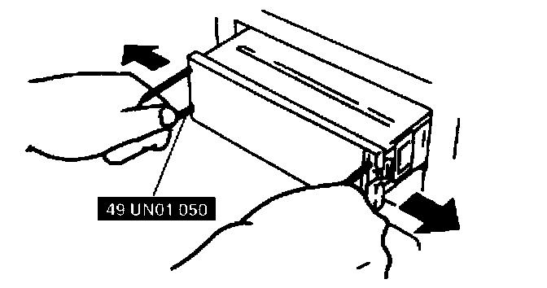
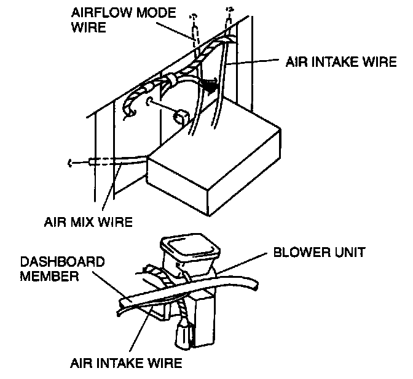
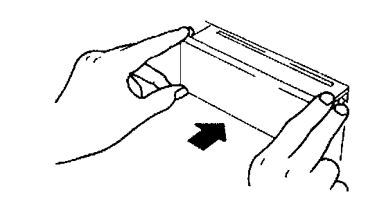

Removal and Installation
HEATER CONTROL UNIT REMOVAL1. Disconnect the negative battery cable.
2. Disconnect the air intake wire from the blower unit.
3. Disconnect the air mix wire and airflow mode wire from the heater unit.

4. Remove the hole covers by inserting a small, tape-wrapped, flathead screwdriver into the slot, then carefully prying them off without scratching the center panel. Pry up and pull off the hole covers carefully to prevent the posts from breaking off.

5. With the beveled parts of the SST facing inward, insert them into the heater control unit.
6. Pull the SST outward and rearward to slide out the heater control unit.
7. Disconnect the heater control unit connectors.
HEATER CONTROL UNIT INSTALLATION

1. Pass each wire through the following routes then connect them to each unit.

2. Connect the heater control unit connectors.
3. Insert the heater control unit until each clip clicks.
4. Install the hole covers carefully to prevent the posts from breaking off.
5. Adjust the heater control unit wire.
6. Connect the negative battery cable.